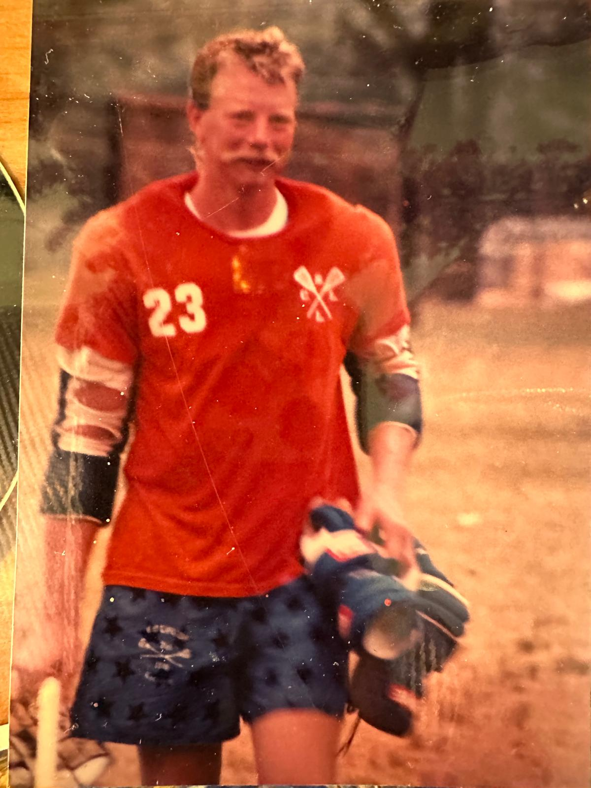

How Paint Man Got Started — Tommy King's Story
I started Paint Man back in 1990 with a paintbrush, a pickup truck, and a whole lot of determination. What began as a one-man operation in the Vail Valley has grown into a crew of dedicated painters serving Eagle County for over three decades.
THIS BLOG IS A SERIES OF AUDIO INTERVIEWS WITH TOMMY KING LATER TRANSCRIBED AND TRANSFORMED INTO BLOG POSTS. THE ORIGINAL AUDIO WILL ALSO EVENTUALLY BE AVAILABLE AS WELL.
CHAPTER 1
Published March 14 2026
The Fraternity Trip That Changed Everything:
Tommy King’s First Visit to Vail

Before Tommy King became the founder of Paint Man, his path to the mountains of Colorado began with an unlikely moment during his college years in Alabama.
In the early 1970s, Tommy was a student at the University of Montevallo, where he was deeply involved in fraternity life. He pledged his fraternity in the spring of 1971 and quickly became active in leadership. At the time, Montevallo’s fraternities were transitioning from local organizations to national chapters. Tommy played a key role in that transition, eventually becoming the first president of the newly chartered Pi Kappa Alpha chapter.
In 1974, that role brought him somewhere he had never imagined going: Vail, Colorado. Tommy and four fraternity brothers piled into a rented station wagon and drove west from Alabama to attend the Pi Kappa Alpha national convention held in Vail. For most of them, the trip was simply an adventure. None of them had seen the Rocky Mountains before.
The convention took place near Golden Peak at Manor Vail, one of the early entry points to Vail Mountain. While some of the group attended meetings, others explored the resort town. The moment that would change Tommy’s life happened on the final night of the convention.
The closing banquet was held at Eagle’s Nest restaurant at the top of the Lionshead gondola. After dinner, Tommy was told there was a problem outside—someone was accusing members of their group of throwing objects at the gondola.
Concerned about protecting the fraternity’s reputation, Tommy went up to the top deck to investigate. Instead of an argument, he found himself in conversation with a German chef named John Lorenzen. Lorenzen had come to the United States after World War II and had helped build the culinary scene in the young ski town of Vail. As the two talked, Tommy looked out across the valley from the mountaintop deck.
The view stunned him. He had never seen mountains like this before. As they talked, Lorenzen told him something unexpected:
“You should learn how to ski,” he said. “You should come work for me.”
For Tommy, a college student from Alabama who had never even seen snow skiing before, the idea sounded almost unbelievable. But before the night ended, the chef handed him a phone number.
That small moment on top of Vail Mountain would eventually change the course of Tommy King’s life.